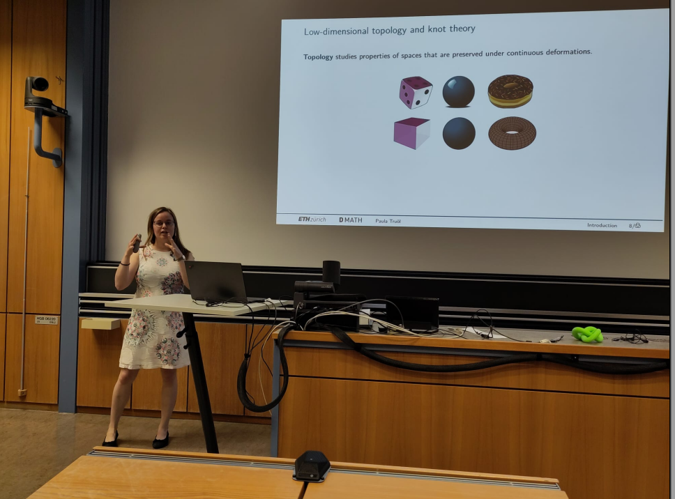

On this page
↪ Publications and preprints↪ Doctoral thesis
↪ Recordings of talks
↪ More about my research interests, including an informal introduction to knot theory
Preprints ⤴
- On the detection of knotted spheres by their traces in high dimensions
joint with Valentina Bais, Alessio Di Prisa, Daniel Hartman, Chun-Sheng Hsueh, Marc Kegel, Alice Merz, Mark Pencovitch, Arunima Ray, Diego Santoro, Laura Wakelin
↪ arXiv:2511.07251 - Strongly quasipositive links are concordant to infinitely many strongly quasipositive links
↪ arXiv:2210.06612
Publications and accepted papers ↪ arXiv
- Braid positive surgery descriptions
joint with Marc Kegel
Accepted for publication in Glasg. Math. J.
↪ arXiv:2512.14589 - Non-complex cobordisms between quasipositive knots
joint with Maciej Borodzik
Accepted for publication in J. Math. Pures Appl. (2025), DOI
↪ arXiv:2504.04894 - Algorithms in 4-manifold topology
joint with Stefan Bastl, Rhuaidi Burke, Rima Chatterjee, Subhankar Dey, Alison Durst, Stefan Friedl, Daniel Galvin, Alejandro García Rivas, Tobias Hirsch, Cara Hobohm, Chun-Sheng Hsueh, Marc Kegel, Frieda Kern, Shun Ming Samuel Lee, Clara Löh, Naageswaran Manikandan, Léo Mousseau, Lars Munser, Mark Pencovitch, Patrick Perras, Mark Powell, José Pedro Quintanilha, Lisa Schambeck, David Suchodoll, Martin Tancer, Annika Thiele, Matthias Uschold, Simona Veselá, Melvin Weiß, Magdalina von Wunsch-Rolshoven
This paper is the result of our joint work at the Workshop on 4-manifolds and algorithms held at the University of Regensburg in September 2024.
Accepted for publication in Algebr. Geom. Topol.
↪ arXiv:2411.08775
- Minimal cobordisms between thin and thick torus knots
joint with Sebastian Baader, Lukas Lewark, Filip Misev
↪ Proc. Edinb. Math. Soc. 69, no. 1 (2026), 177–183. - 3-braid knots with maximal 4-genus
joint with Sebastian Baader, Lukas Lewark, Filip Misev
↪ Trans. Amer. Math. Soc. Ser. B 11 (2024), 600–621. - On the nonorientable four-ball genus of torus knots
joint with Fraser Binns, Sungkyung Kang, Jonathan Simone
↪ Algebr. Geom. Topol. 25-4 (2025), 2209–2251. - The upsilon invariant at \(1\) of \(3\)-braid knots
↪ Algebr. Geom. Topol. 23-8 (2023), 3763–3804.
Doctoral thesis ⤴
On notions of braid positivity and knot concordance,
ETH Zurich (2023).
Here are the slides from my PhD defense talk,
and the slightly uglier but shorter handout version of the slides.

Me defending my PhD thesis in June 2023, photo credit: Lukas Lewark.
Recordings of talks ⤴
- Strongly quasipositive knots are concordant to infinitely many strongly quasipositive knots,
The Low-dimensional Workshop, Erdős Center, Alfréd Rényi Institute of Mathematics, Budapest, March 2023.
🎥 Recording of my blackboard talk and a photo by Sarah Blackwell. - Strongly quasipositive knots are concordant to infinitely many strongly quasipositive knots,
Geometry and Topology Seminar, CIRGET (online), December 2022.
🎥 Recording of my talk and the slides. - The alternation number and the Upsilon-invariant at 1 of positive 3-braid knots, Knot online seminar (K-OS) (online), February 2022.
🎥 Recording of my talk and the slides.
{kind=link}